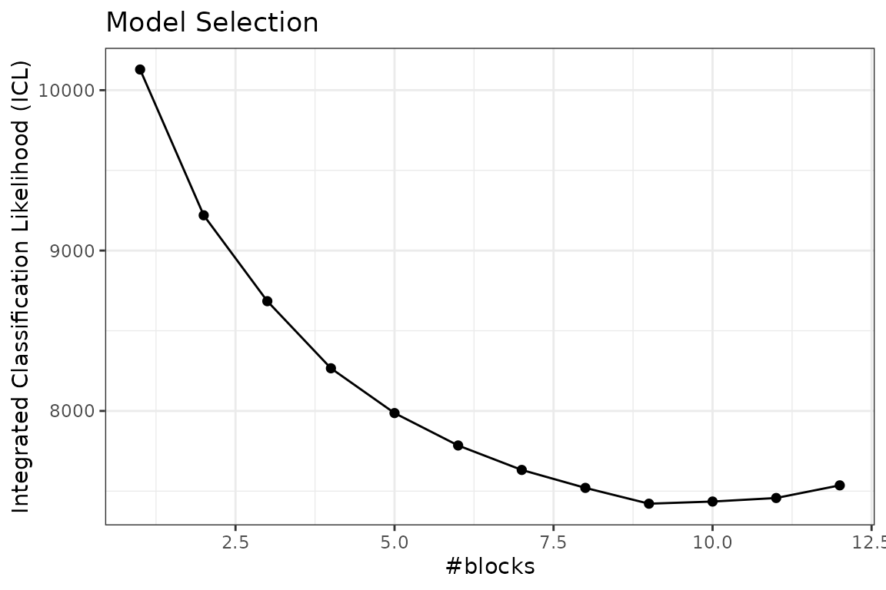
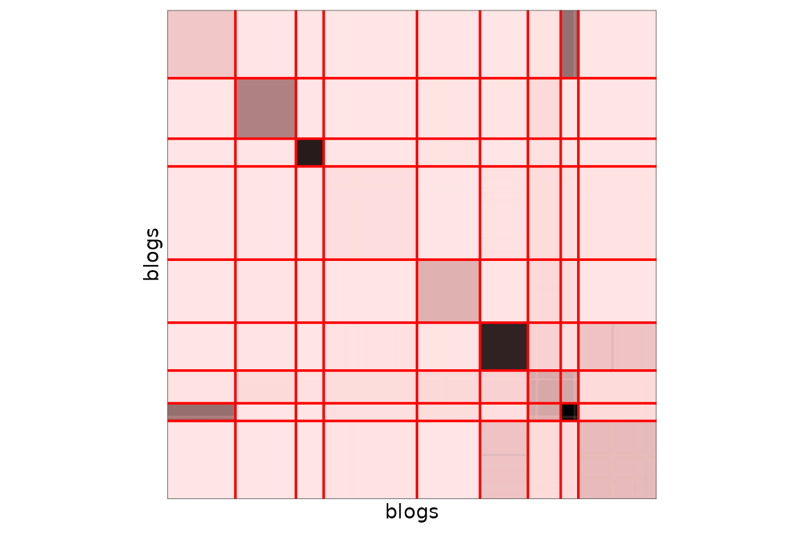
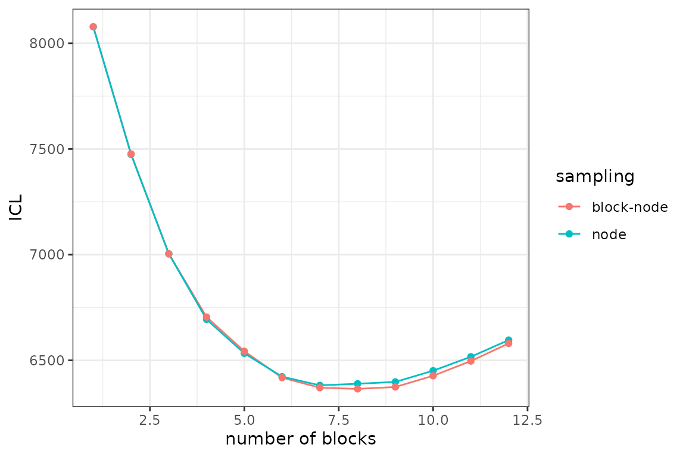

missSBM: a case study with the French political blogosphere
missSBM team
Last update: 2026-11-25
Source:vignettes/case_study_frenchblog.Rmd
case_study_frenchblog.RmdThis vignette follows the analysis of the French political blogosphere of Barbillon et al. (2022), in a reduced form, with the current version of missSBM: we fit an SBM on the full network, sample it with a design that depends on its blocks, and check how well the structure is recovered when the sampling is accounted for, or ignored.
Prerequisites
The estimation can run in parallel with the future
package (e.g. future::plan("multisession", workers = 2));
this vignette runs sequentially.
The data
The network frenchblog2007 is a snapshot of the French
political blogosphere taken in October 2006, during the campaign of the
French presidential election of 2007: the nodes are blogs, the edges
hyperlinks between them, and each blog is labeled by the political party
it supports. We remove the isolated blogs.
data("frenchblog2007", package = "missSBM")
frenchblog2007 <- delete_vertices(frenchblog2007, which(degree(frenchblog2007) == 0))
blog <- as_adjacency_matrix(frenchblog2007, sparse = FALSE)
party <- vertex_attr(frenchblog2007, "party")
table(party)## party
## analyst center-left center-right far-left far-right green
## 11 11 32 7 2 9
## left liberal right
## 57 25 40The SBM on the fully observed network
We fit SBMs with 1 to 12 blocks. With no missing dyad, every design
reduces to the SBM alone: we use "node".
vBlocks <- 1:12
sbm_full <- estimateMissSBM(blog, vBlocks, "node", control = missSBM_param(trace = FALSE))
plot(sbm_full, "icl")
The ICL selects 9 blocks. They are mostly made of blogs of the same political side, the larger parties being split in several blocks:
blocks_full <- sbm_full$bestModel$fittedSBM$memberships
table(party, block = blocks_full)## block
## party 1 2 3 4 5 6 7 8 9
## analyst 1 0 0 2 0 0 7 1 0
## center-left 0 0 0 9 0 0 1 0 1
## center-right 24 0 0 0 1 0 1 6 0
## far-left 0 0 0 7 0 0 0 0 0
## far-right 0 0 0 2 0 0 0 0 0
## green 0 0 0 9 0 0 0 0 0
## left 0 0 0 6 0 19 2 0 30
## liberal 0 24 0 1 0 0 0 0 0
## right 2 0 11 1 24 0 2 0 0
A partly observed network
We now sample this network with the "block-node" design:
the blogs of the blocks gathering less than 10% of the blogs are
observed with probability 0.2, the others with probability 0.8 (an
observed blog reveals all its hyperlinks). The probability of observing
a blog then depends on the block it belongs to: the missing data are not
at random.
block_prop <- sbm_full$bestModel$fittedSBM$blockProp
sampling_rate <- ifelse(block_prop < 0.1, 0.2, 0.8)
blog_obs <- observeNetwork(blog, "block-node", sampling_rate, clusters = blocks_full)
mean(is.na(blog_obs[upper.tri(blog_obs)])) # the fraction of missing dyads## [1] 0.1442765Accounting for the sampling, or not
We fit the SBM on the partly observed network under two sampling
designs: "node", which assumes that the blogs are missing
at random, and "block-node", the design that generated the
data. We use 2 passes of exploration of the number of blocks, advised
for a reference analysis.
control <- missSBM_param(trace = FALSE, iterates = 2)
sbm_node <- estimateMissSBM(blog_obs, vBlocks, "node", control = control)
sbm_block <- estimateMissSBM(blog_obs, vBlocks, "block-node", control = control)The ICL is built on the observed data, so it compares the two designs fitted on the same data; it cannot be compared with the ICL of the fully observed network, whose data differ.
rbind(
data.frame(Q = vBlocks, ICL = sbm_node$ICL, sampling = "node"),
data.frame(Q = vBlocks, ICL = sbm_block$ICL, sampling = "block-node")
) %>%
ggplot(aes(x = Q, y = ICL, color = sampling)) + geom_line() + geom_point() +
labs(x = "number of blocks", y = "ICL") + theme_bw()
## node block-node
## 6381.696 6365.075On this sampling, the ICL prefers block-node. This choice is not
stable, though: over repeated samplings of this network,
"node" often gets the smaller ICL. The
"block-node" model has one sampling parameter per block,
whereas the sampling only has two distinct rates, and the small blocks
observed with probability 0.2 have few blogs to inform their rate: the
gain in likelihood does not always pay the penalty of these parameters
(log N each, where N is the number of blogs). A difference of ICL of a
few units, or of a few times log N with many more parameters, is no
evidence for one design.
Whatever the design, the partitions are close to that of the fully observed network (Adjusted Rand Index, 1 for the same partition):
c(node = aricode::ARI(blocks_full, sbm_node$bestModel$fittedSBM$memberships),
"block-node" = aricode::ARI(blocks_full, sbm_block$bestModel$fittedSBM$memberships))## node block-node
## 0.6930767 0.6618176With "block-node", the sampling parameters are estimated
for each block. Averaged over the blogs of each true rate, they separate
the two rates, shrunk toward each other: the estimated blocks do not
exactly match the blocks of the sampling, and mix blogs of both
rates.
fit <- sbm_block$bestModel
estimated_rate <- coef(fit, "sampling")[fit$fittedSBM$memberships] # for each blog
true_rate <- sampling_rate[blocks_full]
tapply(estimated_rate, true_rate, mean)## 0.2 0.8
## 0.4217655 0.6869079Imputing the missing dyads
The fitted model predicts the missing dyads, the hyperlinks of the
unobserved blogs. We measure the quality of these predictions by the
area under the ROC curve (AUC: the probability that a missing edge is
predicted higher than a missing non-edge, 0.5 for a random guess). Both
designs predict the missing hyperlinks well, with close AUCs; over
repeated samplings, "block-node" is slightly better on
average.
auc <- function(truth, prediction) {
r <- rank(prediction)
n1 <- sum(truth == 1); n0 <- sum(truth == 0)
(sum(r[truth == 1]) - n1 * (n1 + 1) / 2) / (n1 * n0)
}
missing <- which(is.na(blog_obs) & upper.tri(blog_obs))
c(node = auc(blog[missing], predict(sbm_node$bestModel)[missing]),
"block-node" = auc(blog[missing], predict(sbm_block$bestModel)[missing]))## node block-node
## 0.8146287 0.7563349Covariates
We finally consider the blogs of the right and of the left, and a
covariate indicating the side of each blog. The blogs of the left are
observed more often: the probability of observing a blog depends on the
covariate, a design missing at random given the covariate
("covar-node").
subgraph <- induced_subgraph(frenchblog2007, party %in% c("right", "left"))
subgraph <- delete_vertices(subgraph, which(degree(subgraph) == 0))
left <- 1 * (vertex_attr(subgraph, "party") == "left")
adjacency_sub <- as_adjacency_matrix(subgraph, sparse = FALSE)
subgraph_obs <- observeNetwork(adjacency_sub, "covar-node", parameters = 3,
covariates = list(left), intercept = -1)
## an observed blog has all its dyads observed: the proportion of observed blogs, right and left
tapply(rowSums(is.na(subgraph_obs)) == 0, c("right", "left")[left + 1], mean)## left right
## 0.8947368 0.1282051The covariate can enter the sampling only
(useCov = FALSE), or also the SBM, as an effect on the
probability of an edge between two blogs, through their similarity
(:
0 for two blogs of the same side, -1 otherwise).
vBlocks_sub <- 1:6
sbm_cov_sampling <- estimateMissSBM(subgraph_obs, vBlocks_sub, "covar-node", covariates = list(left),
control = missSBM_param(trace = FALSE, useCov = FALSE))
sbm_cov_both <- estimateMissSBM(subgraph_obs, vBlocks_sub, "covar-node", covariates = list(left),
control = missSBM_param(trace = FALSE, useCov = TRUE))
c("in the sampling" = min(sbm_cov_sampling$ICL), "in the sampling and the SBM" = min(sbm_cov_both$ICL))## in the sampling in the sampling and the SBM
## 2207.078 2058.608The sampling parameters (intercept and effect of the covariate on the probability of observing a blog) are estimated in both cases. With the covariate in the SBM, its effect on the edges is estimated too: positive, the blogs of the same side being more connected. Here, the ICL prefers the model with the covariate in the SBM.
coef(sbm_cov_both$bestModel, "sampling")## [1] -1.916923 4.056989
coef(sbm_cov_both$bestModel, "covariates")## [1] 4.956426